Backup recording
Silent recording of an automated real-browser rehearsal. Pause to explain sources and unknowns; this is not a generated mock-up. If playback fails, use the stills below.
Open local recording · Presenter script · Limits
Staged questions
Missing answers are not assumed. Recorded synthetic state.
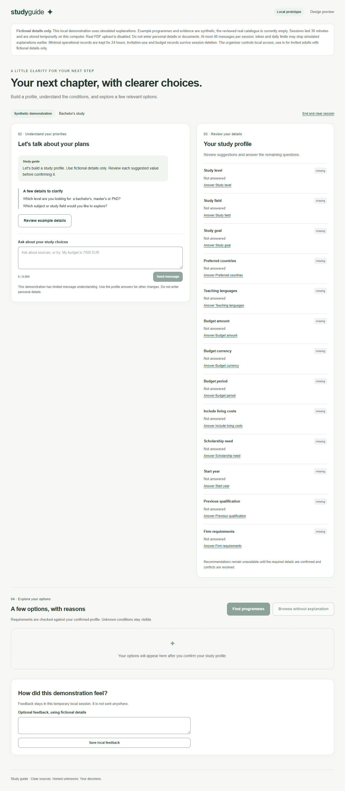

Bachelor sources
Two fictional options, evidence date and next step. Recorded synthetic state.
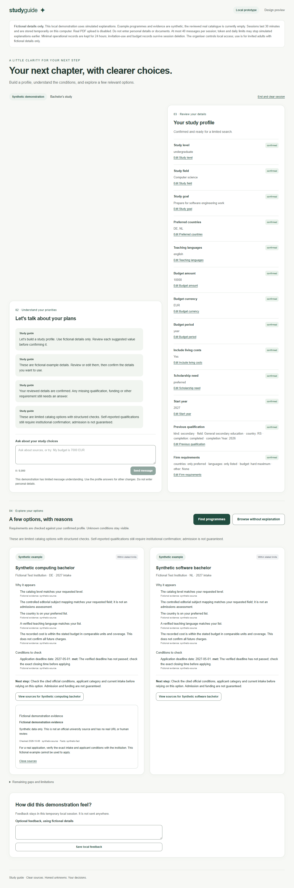

Correction and scope
Confirmed budget correction; unrelated request rejected. Recorded synthetic state.
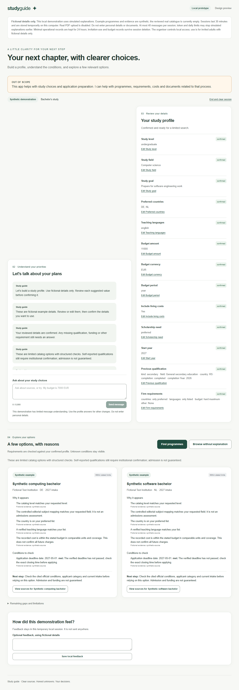

Unknown prerequisites
Missing subjects remain unresolved. Recorded synthetic state.
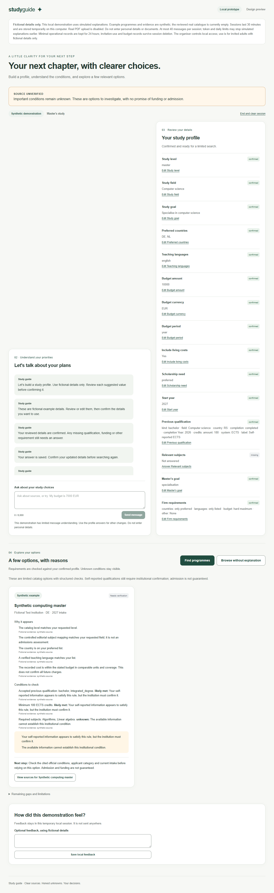

Self-reported prerequisites
Algorithms/Linear algebra are only likely met. Recorded synthetic state.
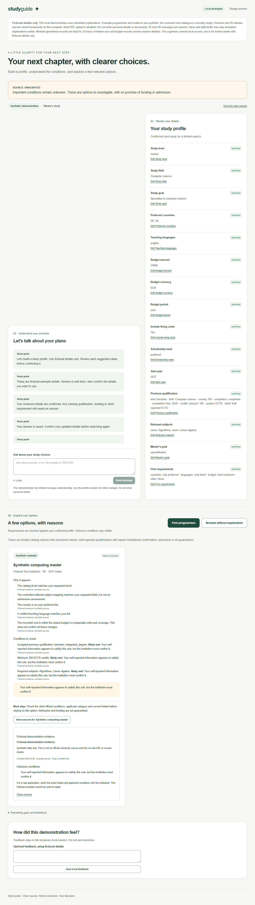

Funded PhD condition
Permission does not confirm funding, supervisor or employment. Recorded synthetic state.
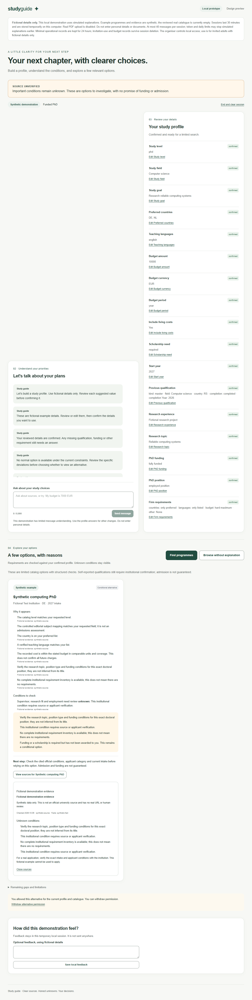

Honest empty result
No relevant computing option in a limited fixture. Recorded synthetic state.
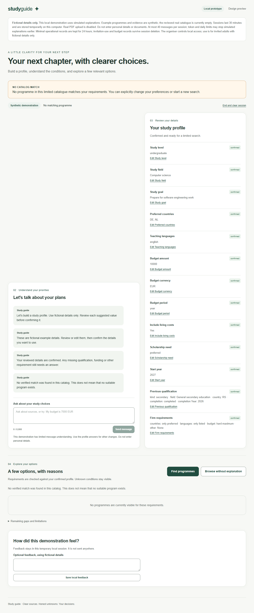


After permission
Conditional option; original budget unchanged. Recorded synthetic state.
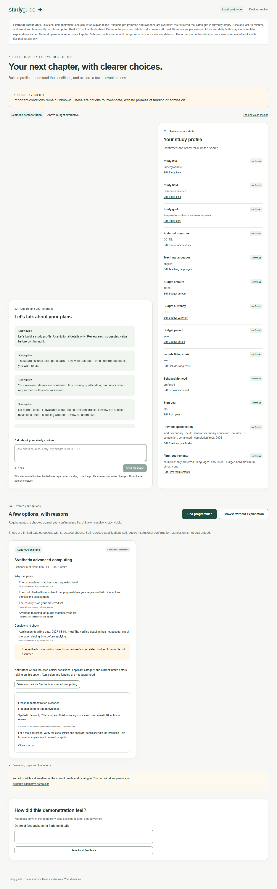

Explicit conflict
Both budget candidates retained; stale results removed. Recorded synthetic state.
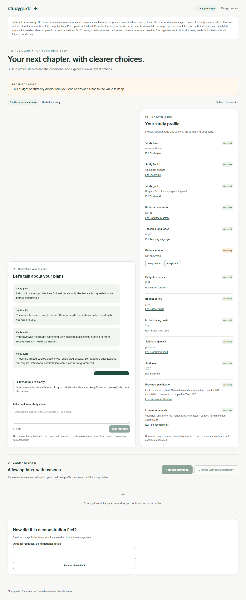

Visible failure
No silent fabricated recommendation. Recorded synthetic state.
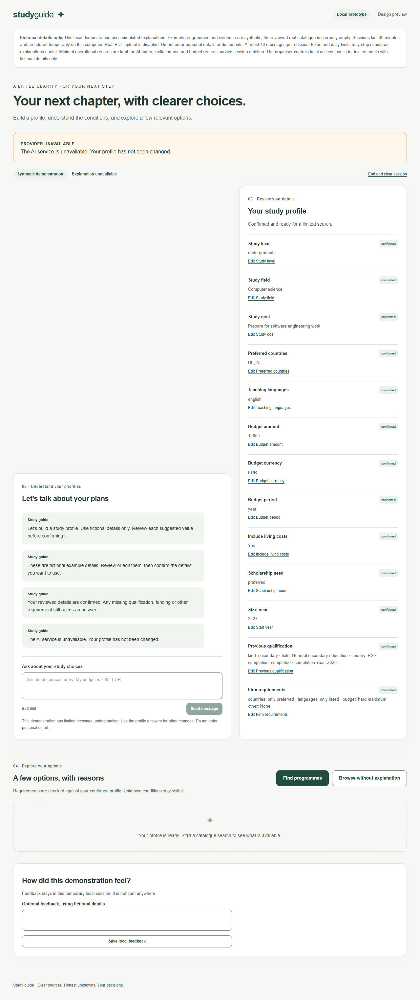

Explicit recovery
Browse without explanation applies the same rules. Recorded synthetic state.
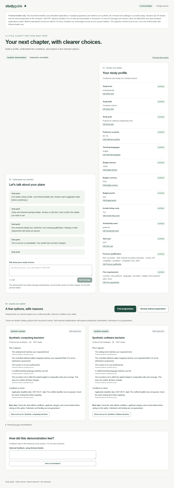